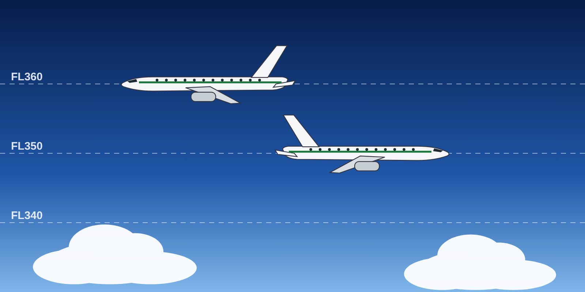

Lesson 01: RVSM Airspace, Approval and Equipment
Learning objectives
- Define RVSM airspace and its benefits.
- List the equipment required for RVSM operations.
- State which Domestic Airlines fleets are RVSM approved.

What is RVSM?
Reduced Vertical Separation Minimum (RVSM) airspace is any airspace or route between FL290 and FL410 inclusive where aircraft are separated vertically by 1,000 ft (300 m) instead of 2,000 ft (600 m).
The reduction adds six flight levels — FL300, FL320, FL340, FL360, FL380 and FL400 — giving significant benefits in fuel economy and en-route airspace capacity.
Approval
ICAO requires States to approve operators and aircraft for RVSM and to establish initial and recurrent training programmes for flight crews (ICAO Doc 9574, Manual on a 300 m (1 000 ft) Vertical Separation Minimum; Annex 6). In Europe this is a specific approval under EASA Part-SPA (SPA.RVSM). Both the aircraft (airworthiness) and the operator (procedures and training) must be approved.
| Fleet | RVSM | Notes |
|---|---|---|
| Boeing 737-800 | ✅ RVSM approved | All RVSM procedures in this course apply. Check the MEL for RVSM-related items before every flight. |
| Dash 8-Q400 | — Not applicable | Operates below RVSM airspace (maximum operating altitude below FL290). This course gives awareness of RVSM traffic, phraseology and TCAS. |
| Dash 8-Q200 | — Not applicable | Operates below RVSM airspace. Awareness only, as for the Q400. |
Required equipment
- Two independent altitude measurement systems;
- one SSR transponder with altitude reporting, connected to the altitude measurement system in use for height-keeping;
- an altitude alerting system;
- an automatic altitude control system (autopilot).
The minimum aircraft system performance specification (MASPS) sets tight limits on altimetry system error — of the order of 80 ft — and requires the automatic altitude control to hold the cleared level within about ±65 ft in normal conditions; altitude excursions of more than about 200 ft must not occur in level flight. Exact values are in your AFM RVSM statement.
Key takeaways
- RVSM: FL290–FL410 inclusive, 1,000 ft separation, six extra levels.
- Approval required for both aircraft and operator (ICAO Doc 9574, EASA SPA.RVSM).
- Equipment: two altimetry systems, transponder, altitude alerter, autopilot with altitude hold.
- B737-800: RVSM approved. Q400 and Q200: operate below RVSM airspace.
Knowledge check
Which flight levels are included in RVSM airspace?